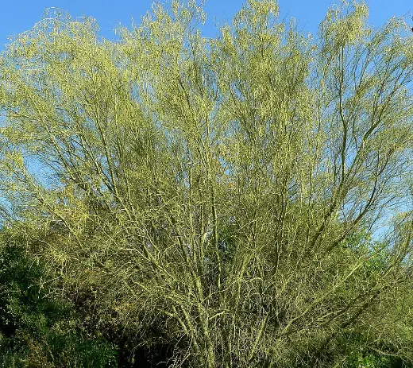

Wild seed or grain · May–Jun
Palo verde beans
Parkinsonia microphylla
Also called Palo verde beans
Palo verde beans is a wild seed or grain you can forage from May to June in Southwest. Green-barked desert tree that blazes yellow in spring; bean pods follow in early summer.

When is palo verde beans in season in the United States?
Palo verde beans is usually in season May to June. Timing shifts with weather, latitude and altitude.
Where does palo verde beans grow in the United States?
Palo verde beans grows in Arizona, Nevada, New Mexico, Texas, Utah. Regions: Southwest.
How do you recognise palo verde beans?
Green-barked desert tree that blazes yellow in spring; bean pods follow in early summer.
How do you harvest palo verde beans?
Shake or strip ripe seed heads into a bag when they rattle and fall easily. Winnow out the chaff in a breeze.
How do you eat palo verde beans?
Green beans eaten raw like edamame; dry seeds sprouted or ground.
How do you store palo verde beans?
Dry.
What is palo verde beans good for?
Protein.